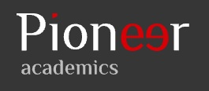

Algorithmic Detection of Financial Fake News
Problem Statement
Financial misinformation can distort stock market prices by generating artificial volatility, influencing investor behavior, and challenging the assumptions underlying the Efficient Market Hypothesis.
Methodology
This research focuses on creating a model that can detect fake news articles by recognizing them from textual features and social media interactions. Using the FakeNewsNet dataset, financial news records were filtered by searching for specific keywords, then feature engineering was applied to enhance the dataset. Two different model configurations were tested: SVM and KNN-based approaches.
Results
The SVM-based model outperformed the KNN approach with a final accuracy of 93.88% and an F1 score of 96.05%. The optimized model was saved for practical deployment in the GitHub repository as best_fake_news_model.pkl.
Impact
These findings demonstrate that social media interactions, textual analysis, and news article metrics can effectively detect financial misinformation in real-world contexts, helping to reduce market manipulation and promote a fairer investment environment.